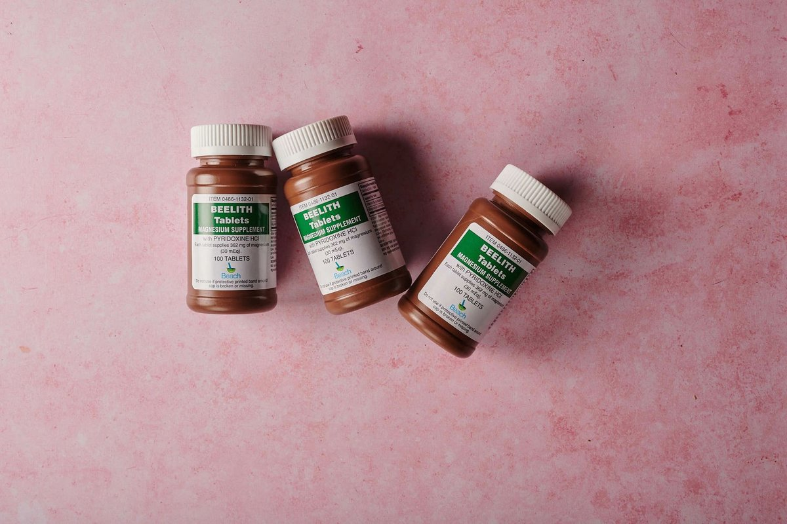

Millions Take Calcium And Vitamin D For Bone Health. A Major Review Finds Little Benefit

Key takeaways
- I spent three years choking down massive chalky pills every morning, convinced I was shielding my skeleton from future fractures.
- Then I stumbled onto the latest research showing how Millions Take Calcium And Vitamin D For Bone Health.
- Focus on: Rethinking Mineral Absorption from the Inside Out.
I spent three years choking down massive chalky pills every morning, convinced I was shielding my skeleton from future fractures. Then I stumbled onto the latest research showing how Millions Take Calcium And Vitamin D For Bone Health. A Major Review Finds Little Benefit in actually reducing overall fracture risks for average adults.
It was a total slap in the face after spending hundreds of dollars at my local grocery store. I realized throwing isolated minerals into a sluggish digestive system wasn't helping my body absorb a single thing.
Rethinking Mineral Absorption from the Inside Out
When I learned that Millions Take Calcium And Vitamin D For Bone Health. A Major Review Finds Little Benefit, I knew I had to stop relying on quick fixes. The real problem isn't always a lack of nutrient intake, but a lack of nutrient absorption.
Our GI tract relies on a balanced microbiome to digest complex nutrients and signal key metabolic pathways. You can check out this related healthy tip to see how gut bacteria influence daily energy and nutrient uptake.
Instead of overloading my stomach with heavy pills, I started focusing on weight-bearing exercises and supporting my gut environment. Incorporating a daily walk with a loaded backpack made a noticeable difference in my physical strength, as discussed in another another practical guide.
Fixing the Foundation: Gut Health First
If your digestive lining is inflamed or sluggish, high-dose supplements just end up wasting your money. I found that nurturing my microbiome made me feel lighter and far more energetic every afternoon.
To help balance my internal ecosystem, I started taking a daily targeted microbial blend. I highly recommend trying the Daily Synbiotic Capsule to give your gut the consistent support it needs to thrive.
Disclosure: This page may contain affiliate links.
The 2-Minute Win
Swap your giant morning calcium tablet for two minutes of heavy heel drops or jumping jacks today. Physical impact signals your body to retain bone density far better than passive supplementation alone.
Smart Daily Habits That Actually Move the Needle
For long-term health, focus on leafy greens, natural sunshine, and resistance training. You can read a similar wellness insight on how nutrient-dense real foods beat synthetic supplements every single time.
Consistency is key when changing your morning routine. Try to stay consistent with this approach by tracking your weekly physical movement and meal quality rather than counting pill dosages.
True bone density comes from mechanical strain and optimal intestinal absorption, not from swallowed chalk.
Take time to explore your daily routines and see what small shifts you can make right now. Feel free to explore more healthy-habits guides to build a sustainable, stress-free wellness plan that fits your life.
Educational only — not medical advice.
Recommended Reading
- Unlock Better Sleep: Quality Sleep Strategies for Optimal Health & Energy
- Calcium & Vitamin D for Bones: What the Latest Science Says for Americans
- The Ultimate Guide to Daily Hydration: Boost Energy & Wellness
More in healthy-habits
8 Common Food Additives Linked To High Blood Pressure And Heart Disease
Discover 8 Common Food Additives Linked To High Blood Pressure And Heart Disease and learn how to swap ultra-processed i
Read article →Yoga and Mobility for Busy People: A No-BS Daily Guide
Transform your stiff desk body with this honest guide to Yoga and Mobility designed for busy, sedentary workers who lack
Read article →